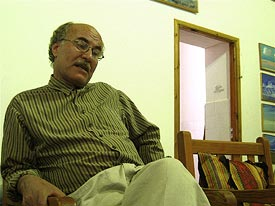

Ali Abani
L'art pictural en Libye se partage entre style franchement figuratif et
peinture abstraite. Il est marqué par l'emploi d'une palette de couleurs variées et une inspiration
nationale :
de nombreux artistes peignent les paysages, le patrimoine, les hommes et les femmes de leur pays. La
nostalgie,
ou du moins l'attachement à la vie bédouine, au cœur de paysages majestueux de plaine ou de désert, est un
thème
récurrent.
les gouaches d'Ali Abani ci-dessous